Page 02 / feature preview
先不讲概念，
我们直接看它能做什么。
先看结果，再讲结构。
01
Steam 播报开始游戏、离开游戏、游玩时长。
02
战绩与日报完美战绩 + 标准日报图片。
03
AI、预警、Web自然群聊、灾害推送、网页入口。
result first先展示真实消息开场先抛结果，再往后讲机制。
same output最后都回到微信群不管来源是 Steam、AI 还是 Web。
proof wallpage 02 / screenshots
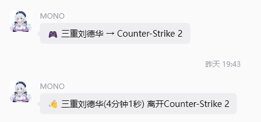
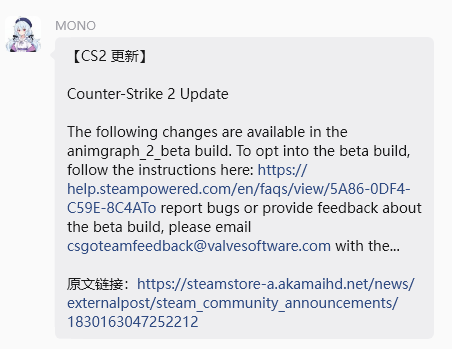
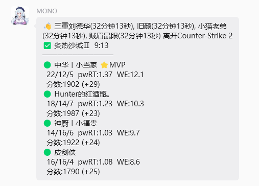
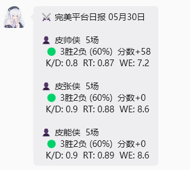
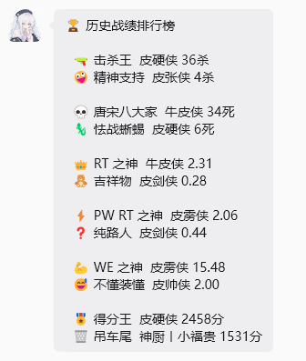
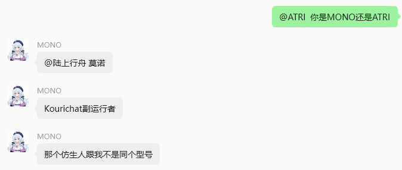
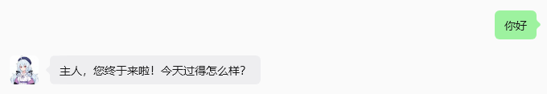
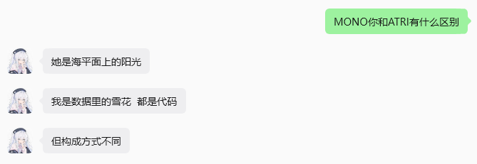
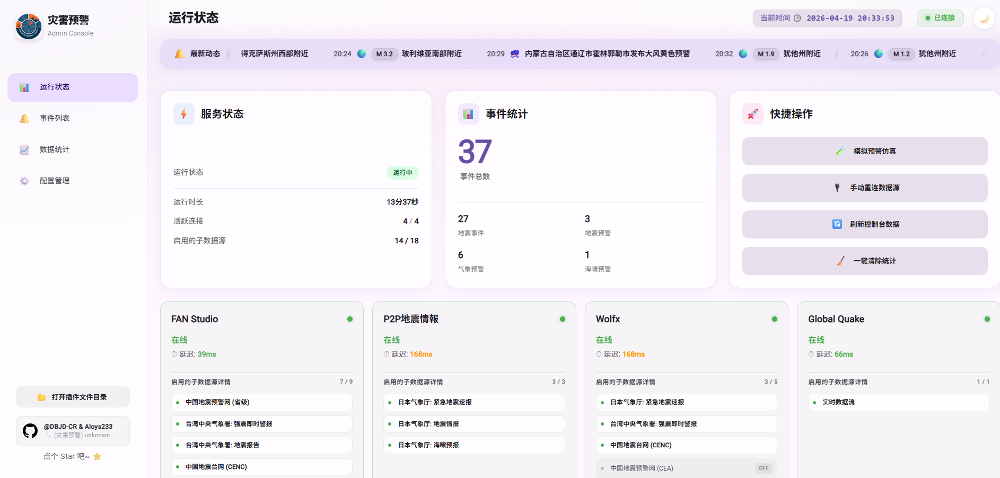
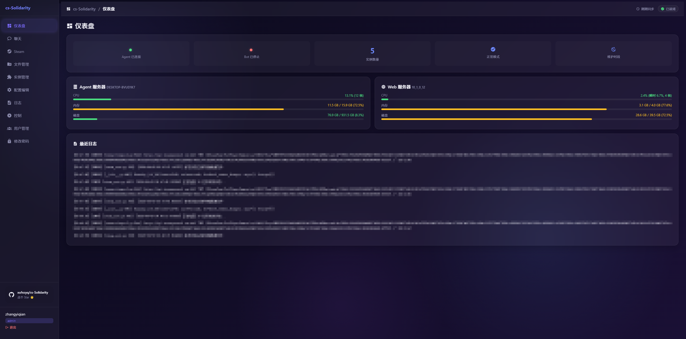
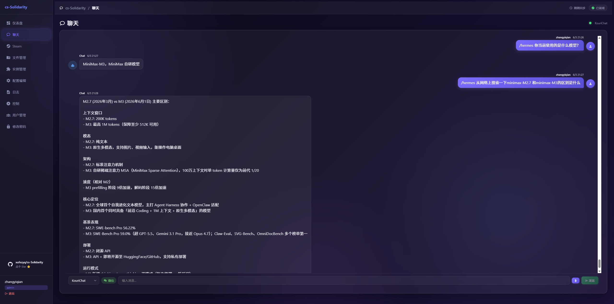

Page 06 / system overview
这些功能看起来很散，
但最后共用一个微信自动化核心。
看起来分散，真正发微信时只有一个出口。
外部
数据源与工具Steam、AI、预警、财经、Web。
核心
队列、路由、Bot API统一收束发送动作。
规则
最终回到主线程这才是共用内核的原因。
system mappage 06 / diagram

Page 09 / steamauto
状态差异，
翻译成群聊消息。
状态变化不是日志，而是直接变成可读群消息。
状态
开始 / 离开游戏由 Steam 状态 diff 生成。
战绩
完美平台播报对局结果整理成结构化消息。
日报
标准图片模板自动汇总今日统计和历史排行。
sourceSteam Web API + 完美平台状态和比赛数据分别进入同一输出链路。
importantSteamAuto 不直接发微信它只负责发现变化并调用发送函数入队。
steam outputspage 09 / proof


Page 10 / anti-detect
真正像人一样操作微信的细节，
不应该散在每个功能里。
关键不是“能点”，而是“别点得像机器”。
鼠标
曲线 + 扰动不走死直线。
键盘
随机输入节奏按键间隔更像真人。
窗口
切回安全聊天并最小化减少异常暴露。
anti-detect patchpage 10 / diagram

Page 11 / main loop
主循环五步，
先发再读。
顺序很重要，先发再读，减少竞态。
01
检查维护窗口减少无效操作。
02
处理 Web 消息先入统一队列。
03
消费发送队列主线程真正发送。
04
接收并分发新消息按路由交给实例。
05
空闲时最小化微信降低暴露感。
main looppage 11 / diagram

Page 13 / remote ops
内网 Windows Bot 不需要开公网端口，
也能被远程维护。
不做端口映射，靠 Agent 主动连出。
现实
Bot 常在内网 Windows没有公网 IP。
方案
Agent → Server → Browser浏览器只访问公网 Server。
结果
远程观测与控制状态、日志、配置都能维护。
remote management flowpage 13 / sequence